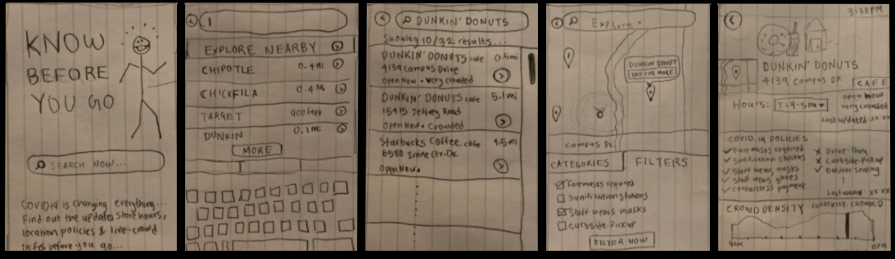
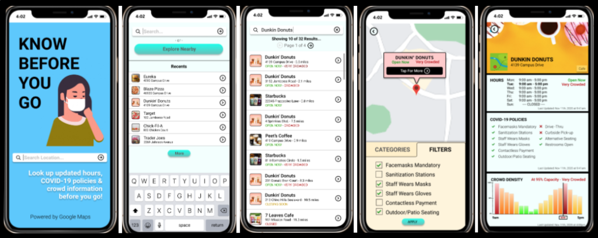

Know Before You Go
By Neeraj Dharmadhikari & Arthur Tham
An Application Design for COVID-19 Information
Project in User Interface Design & Evaluation – Fall 2020 (INF231)
- Overview of the Problem
According to the Centers for Disease Control and Prevention website, as of December 2020, there are
15 million cases of COVID-19 and around 285 thousand COVID-19 related deaths in the United States.
Subsequently, COVID-19 restrictions recommend people to stay indoors to help stop the spread of the
virus; however, this poses new challenges for everyday tasks, such as buying food, groceries,
medicine, and other essential items. There might be other reasons why people might choose to step
outside their homes; however, they may not be equipped with the proper knowledge of the pandemic
restrictions for the locations they want to visit.
- Our Application We decided to learn about what information people want to know before going outside during the pandemic and then created an application prototype tailored to those needs that can help people know all the information they want before they go somewhere. Introducing Know Before You Go...
Human-Centered Design
Our approach to designing the prototype implemented Human-Centered Design (HCD), a process working
around the understanding of peoples’ wants and needs with constant involvement from many testers, survey
participants, and our design team.
We started by designing a survey to assess the needs of our
target audience, which are smartphone users aged 18-50 that want or need to go out but are
concerned about the pandemic.
After learning about their experiences and perspectives, we
created workflow diagrams and scenarios that these people might encounter, focusing on how they will
access the information they need quickly. We converted our diagrams into
paper mockups and used rapid low-fidelity prototyping to evolve our design.
With our peers’ feedback, we
iterated on our design using Marvel and Figma to create interactive prototypes. Finally, we performed
usability testing with a few people using the think-aloud protocol and observation via remote calling.
We took our observations from the testing sessions to iteratively improve our design.
Formative Stage
In our formative stage, we used a Google Form survey that took around 5 to 10 minutes to complete.
It consisted of four main sections:
Demographic-based information: This is
where we asked the participants for their name, age, and current location.
Experiences During the Pandemic: This is where we asked the participants about their comfort
levels and factors in visiting locations they go to during the pandemic. We asked how important it is for them
that certain restrictions exist and whether they would make decisions based on specific factors or information.
Situational Questions: This is where we provided the participants with scenarios and asked what they would do if they experienced a similar scenario. This is also where we asked them directly whether they would benefit from an application that provided information to prevent them from being in scenarios they do not want to be in.
Raffle Information: This is where the participants opted in to the $10 Starbucks gift card raffle that we ran at the conclusion of the open survey period.
We reached out to our contacts and received 48 responses with ages ranging from 18-29 and mostly living in California. From these responses, we observed the following:
Percentage of people (n=48) claiming that they are...
Quotes From Survey

I went to Albertson's and that plaza surprisingly had a lot of people dining outside and not wearing any masks. It felt like I was walking through a war zone and I wanted to be in and out quickly.

Went to the park for a walk and there were people without masks. Most people were not social distancing. I ended up just going home since I felt unsafe around so many people not wearing a mask.

...one time I went to a store to order pick-up to-go food and it was closed because of COVID-19...
I socially distanced at least 6 feet, if not, more. I also did my best to have hand sanitizer on me whenever I got back in the car or whenever I got back home. If we got anything from that area and brought it back, we would wipe it down with Clorox wipes prior to opening or moving it further into our apartment.
Costco!!! It might be all the deals, but it's crazy how people forget about social distancing rules + how no workers are enforcing the rules when they see it happen. I always try to wait until people leave to grab something from a crowded area.
That happened when I went to the beach. Even though I was around people I knew very well and that had quarantine, I kept my mask on the whole time and tried to socially distance as much as I possible could as well as leaving to wash my hands every hour.
Working in a service industry, it is difficult physically back away from the man coughing without coming off rude. I just had to stand there, slightly holding my breath, hoping it wasn’t covid.
I go on trails often, if I see someone coming towards me without a face mask I distance myself as much as possible from them and always wear my face mask. If a trail didn’t require a face mask and I didn’t see anyone on the trail, sometimes I would take off my face mask temporarily but still wear it around my chin, so if I saw someone coming I would put it on right away.
COVID-19 Related Policies: Based on the qualitative responses to our survey’s scenario questions, we
learned how uncomfortable our participants are around people that do not wear facemasks, sometimes
leading our participants to react involuntarily (ie. having a panic attack). We also learned that
participants wanted to know “what restaurants are not allowing outdoor seating,” and “how often the
location [is] sanitized.” We gathered information like this to design a component that shows them
whether locations enforce these restrictions and have features that help them feel safe.
Crowd Density:
Many participants claimed to “leave [a location] if there are too many people” or
stay away when they see crowded areas during the pandemic. They also want to know about the maximum
capacity of various locations. This led us to design a component for crowd density, a measure of how
many people are congregating in one location, to show our potential users how crowded a location is.
Hours: Many participants also found themselves unaware of various locations’ operating hours changing
due to the pandemic. One participant “couldn’t tell just from Google or Yelp whether it was open
because they each conflicted with each other.” Another participant put it best: it is “more important
to prove that [a given time] is for sure the hours of the business.” Thus, we decided to design a
component that shows the updated hours of locations and show an indicator listing when the hours were
last updated. This will give the user confidence that the hours are indeed up-to-date.
Design Stage
Based on what we learned above, we designed two tasks we believe recognize the needs of our participants:
1. You don't know the updated COVID-19 policies between two locations. Look up their COVID-19
policies and make a decision on which location you would go to.
2. Explore nearby cafes in your area that offer outdoor seating. Which locations did you find?
Which location would you go to based on their location details?
We created a diagram to map out our application’s workflow. We started by drawing a workflow diagram where the items are our proposed screens and the arrows are the transitions between the screens. In each screen, we wrote notes on what features should go in them, and prioritized them by importance.

The screen with the location’s details on COVID-19 policies is the most important screen; so we worked on that screen first. We iterated on the screen’s design through rapid prototyping, first drawing our separate visions of the screens in 5 minutes then meeting together to discuss their important features. Eventually, we merged the concepts that we liked into a singular sketch for that screen for a total of five main screens:

Paper Prototype: From left to right: Landing screen, search screen, results screen,
explore screen, and the location details screen.
Adding Functionality with Marvel
Next, we took photos of our sketched screens and uploaded them to the Marvel
prototyping tool. This allowed us to add basic interactivity to our UI elements that, when clicked on,
enabled users to traverse the flow structure that we designed. We had two people in our design focus group
test this prototype by asking them to complete our two tasks. From this review, we learned that it was
difficult for them to figure out which features were buttons or labels. This made it difficult to discover
the functionality of our prototype.
CLICK HERE FOR OUR MARVEL PROTOTYPE
Transition to Figma
After discussing these reviews, we modified our sketches and reconstructed them on Figma for
higher-fidelity-prototype. With Figma, we can add phone design elements to better show buttons,
labels, scroll-bars, and more. We made sure that buttons were distinct from other UI elements by
enlarging the buttons, adding a gradient effect inside them, and curving the edges. We also
organized our content in symmetric, concise subsections, paying attention to colors and fonts.
The result is a higher-fidelity prototype that we can give to our testers for evaluation.
CLICK HERE FOR OUR FIGMA PROTOTYPE OR FEEL FREE TO PLAY AROUND BELOW

Evaluation Stage
Methods
We divided our evaluation component into two rounds of two people each using a mix of Zoom and
in-person interviews. We recorded the participants’ screens and observed their behavior by tracking
their pointer movements and encouraging them to think aloud as they completed their tasks.
After completing each task, we asked them which location they would go to and why. We ended by
asking follow-up questions to our participants about their choices that differed from our
expectations.
CLICK HERE FOR OUR INTERVIEW TEMPLATE
Population Sample
Our population sample consists of users that did not participate in our survey, have tasks that
require them to go outside in some way, and are smartphone users. Our participants are aged
23-47 and currently use iPhones. We interviewed 4 people total across two rounds of testing.
We also made sure that they had access to a computer with a web browser and were willing to
be recorded for our evaluation.
Methods
In our rounds of evaluation, we gained knowledge on feature discovery, button placement,
and making clear the overall functionality and purpose of our application. Some of our
labels were confusing to our testers, drawing their attention away from our application’s
functionality. We also realized that some of our navigational features were inconsistent
with some screens lacking buttons to undo actions. Nevertheless, we were glad that our
participants were able to make decisions on which location to go to (or not go to)
and finish the tasks that we provided.
Quotes From Our Evaluation Interviews
There's a filter (button) and also filters (tab). So maybe the button should say "Apply" instead, because I got confused.
(Blaze Pizza) looks like a pretty good option. They don't have outdoor seating but if I want to come home and eat then it's a pretty good option. Eureka, on the other hand, has outdoor seating but it's a lot more crowded and 40% capacity...yellow/orange compared to green...so I'm tempted to say Blaze Pizza is safer, because I can just pick up and eat at the park or something.
If I knew I was in the mood for coffee, but I didn't know a specific spot, (and) I did want to make sure that they follow specific policies, then I probably (would) use the map for that and filter these out.
I was actually quite amaze that the information could be potentially available. It's really easy to understand the graph... people tend to want to go to less crowded areas. So I see that's a pretty good useful feature.
I really like [the crowd density] feature. For me, I would be hesitant to go to that place because I want to make sure that... less crowded fits my preferences for social distancing and all that, just to make sure that other people are safe and I'm safe.